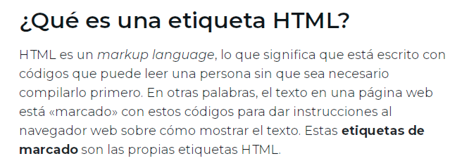
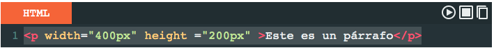
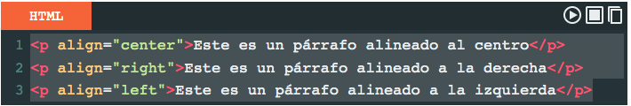

Esta OVA tiene la intención de que los estudiantes puedan conocer, identificar,
y apropiar las etiquetás básicas que se usan en la programación en HTML, así como también,
conocer los atributos y valores que se pueden utilizar en dichas etiquetas.

Etiquetas Básicas de HTML
Hay una serie de etiquetas que son las más usadas para crear cualquier documento HTML, a continuación las explicamos:
body> - /body>
Indica la parte del cuerpo del contenido de un documento HTML. Es una etiqueta esencial para cualquier documento ya que indica donde empieza el contenido visible del documento.
head> - /head>
La parte superior del documento HTML, es donde podremos indicar los metadatos: título del documento, hojas de estilos, javaScript, CSS…
div> - /div>
Un elemento que es usado mayoritariamente para agrupar otros elementos y actuar como plantilla de otros controles. La etiqueta div> nos ayuda a estructurar el documento en secciones.
a> - /a>
Es una etiqueta que nos ayuda a poder crear un enlace a una página web. El atributo principal de la etiqueta HTML es href, donde pondremos el enlace al que queremos conectar. Otro atributo muy usado es target, el cual nos sirve para indicar si el enlace se abrirá en una nueva ventana o en la misma.
Ejemplo HTML:
Pulsa a> href=”https://www.nombredelaweb.com/” target=”_blank”>aquí /a> para visitar DonDominio. = aquí
strong> - /strong>
Si tienes mucho texto, es importante poder dar énfasis a una parte en concreto, con la etiqueta strong lo podemos hacer.
Ejemplo HTML:
Quiero destacar solo strong> esta palabra /strong>. = esta palabra .
br>
Con esta etiqueta HTML le podemos decir al navegador que viene un salto de línea. Nos sirve para hacer el texto más leíble.
H1> - /H1> …. H6> - /H6>
Hay diferentes niveles de títulos, del 1 al 6. Las etiquetas H> + número> nos permiten indicar la importancia del título y para estructurar el contenido, de esta forma ayudamos a los bots a entender la importancia del contenido.
IMG> - /IMG>
Usamos la etiqueta IMG para mostrar imágenes dentro del contenido. Necesita el atributo src para funcionar, ya que será donde indicaremos desde donde tiene que mostrar la imagen.
OL> - li> - /li> - OL> | UL> - li> - /li> - UL> - /UL>
Las etiquetas OL y LI nos sirven para crear listas, OL para listas ordenadas y UL para listas sin orden. Dentro de las listas, los elementos se identifican con la etiqueta LI.
Ejemplo HTML:
ul>
li>Primer elemento /li>
li>Segundo elemento /li>
ul>
P> - /P>
Etiqueta que nos sirve para agrupar texto dentro de un parágrafo. El propósito es poder hacer el contenido más fácil de leer y organizado.
SPAN> - /SPAN>
Con la etiqueta podemos personalizar el estilo de solamente una parte del texto.
Ejemplo HTML:
Solo span style=”color: red;”>esta palabra /span> en rojo. = esta palabra en rojo.
XAVIER IDEVIK. (2021). iebs. ¿Qué es una etiqueta HTML y cuáles son las más importantes?
Extraido de: https://www.iebschool.com/blog/que-es-etiqueta-html-analitica-usabilidad/
Atributos y Valores
Qué son los atributos en HTML
Los atributos en HTML se pueden considerar como información adicional que se coloca siempre en la etiqueta de apertura, esto para añadir, complementar información o significado al elemento HTML al que estamos colocando.
¡Venga ya! agreguemos un poco información y estilo a nuestro contenido. Todas las etiquetas de HTML y sus atributos.
¡Antes! Debo mencionar que para poner estilo a una página web, definitivamente es mucho utilizar el lenguaje de estilos CSS , pero no está de más aprender a utilizar algunos estilos en HTML, podemos necesitar en algún momento.
Los atributos HTML van siempre dentro de la etiquetade apertura y sirven para modificar o agregar alguna característica al contenido.
Veamos algunos atributos y cuál es su función.
Lista de los atributos más usados en HTML
- Id =” ”: Para identificar un elemento único.
- class =” ”: Identificador múltiple.
- align =” ”: Alineación de contenido.
- border =” ”: Para darle borde al contenido.
- style =” ”: Para darle un estilo al contenido.
- background-color =” ”: Para color de fondo.
- href =” ”: Para enlaces html.
- height =” ”: Para determinar altura.
- width =” ”: Para determinar ancho.
- src=“ ”: Para imágenes.
Cómo colocar atributos en HTML
Un atributo se escribe de la siguiente manera: Atributo= “valor” en esa forma, el nombre del atributo, seguido del signo igual (=) y entre comillas el valor, todo esto siempre dentro de la etiqueta de apertura.
Por lo tanto el atributo escrito en una etiqueta (por ejemplo párrafo) se ve así: p atributo="valor"> Este es un párrafo /p>.
p width="400px" height ="200px" > Este es un párrafo /p> =
Este es un párrafo

Valor de un atributo
Cuando se hace uso de un atributo HTML se debe especificar su valor, este puede representar una cantidad exacta, característica especifica o simplemente en que medida se ejecutará dicho atributo.
El valor se expresa entre comillas después del signo de (=), de acuerdo al atributo, pueden haber una variedad de valores disponibles. Por ejemplo, en caso dealign puede tomar el valor de center (centro), right (derecha), left (izquierda), justify (justificado).
Atributos HTML y sus valores
A continuación veamos algunos atributos y los valores que puede tomar:
Atributo: valores
- Id.- su valor puede ser cualquier palabra que sirve para identificar un elemento.
- align.- alineación, sus valores pueden ser: center, right, left, justify.
- border-style.- estilo de borde, los valores disponibles son: solid, dotted, dashed, double, etc.
- bgcolor.- Para color de fondo para ciertos elementos como body, el valor puede ser cualquier color en formato palabra, hexadecimal, RGB, etc. ejemplo: red, green, #ff0000, etc.
- href .- para enlaces su valor puede ser la dirección de un carpeta o URL.
- height .- para definir altura, su valor puede ser una medida con su unidad de medida, por ejemplo: 10px, 12em, 100%.
- width.- define el ancho y su valor puede ser cualquier medida con su respectiva unidad de medida.
Y así, existen muchísimos atributos que podemos aplicar a cualquier etiqueta HTML.
Ejemplos

Este es un párrafo alineado al centro
Este es un párrafo alineado a la derecha
Este es un párrafo alineado a la izquierda
Resumen
- Los atributos en HTML se caracterizan por estar dentro de la etiqueta de apertura
- Los atributos HTML tienen un valor
- El valor de los atributos va entre comillas (” ”)
- El valor de un atributo HTML se especifica antecediendolo con un signo de igual (=)Los atributos determinan estilos, identificadores, etc.
Desarrolladoresweb.org. (2019). Atributos en HTML – qué son, para qué sirven y cuáles son.
Extraido de: https://desarrolladoresweb.org/html/atributos-html/